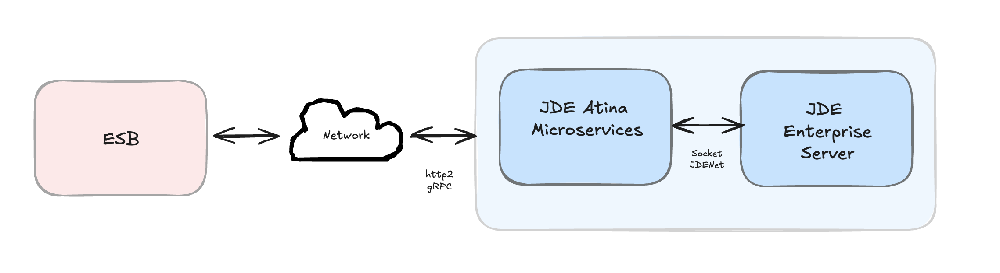
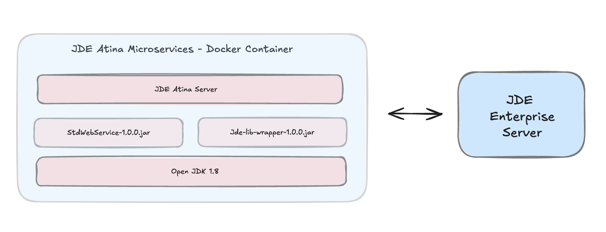
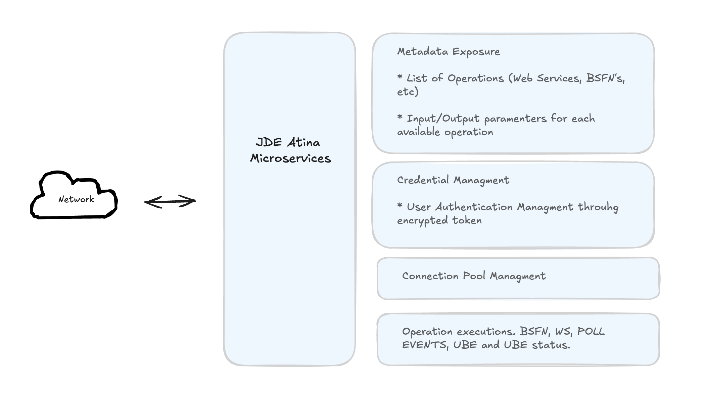
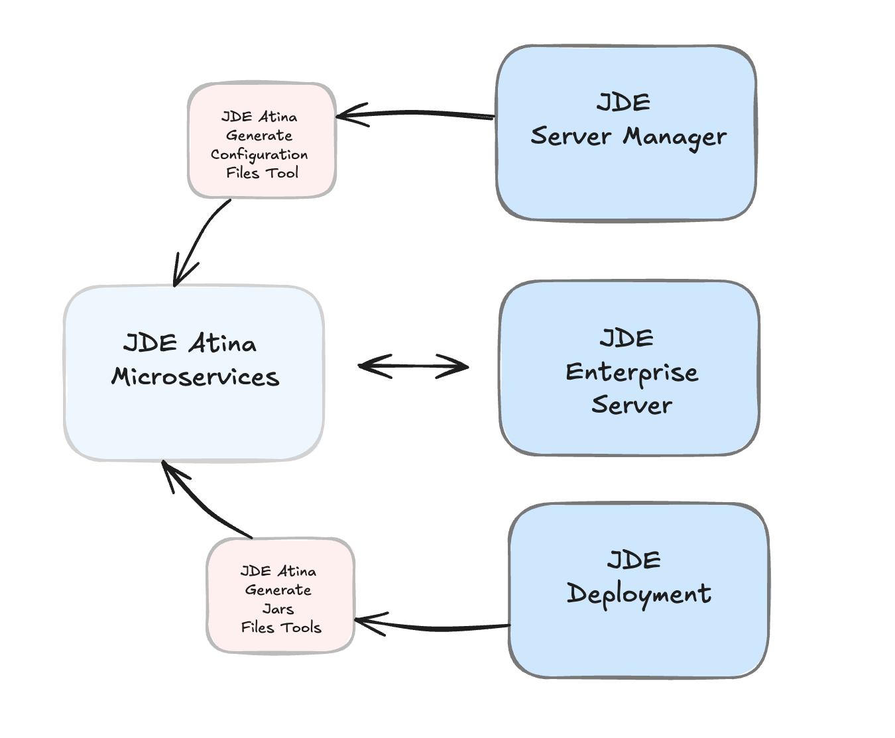
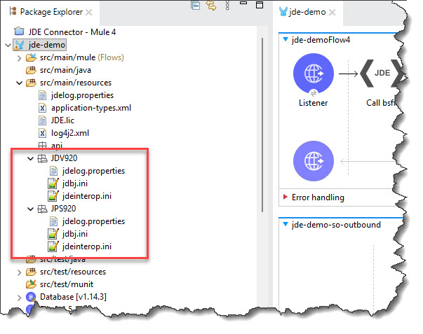

- Introduction
- Prerequisites
- Compatibility
- Preliminary Setup
- JDE Atina Generate Configuration Files Tool
- JDE Atina Generate Jars Files Tool
- (Optional) Deploy Artifacts to a Local Maven Repository
- JDE Atina microservices - Installation
- Step 1: Create the service-constants.properties File
- Step 2: Download the JDEAtinaOverrideServicesConstants Library
- Step 3: Download Docker Compose Files
- Step 4: Configure Environment Variables
- Repository Configuration
- JDE Microserver Configuration
- Microservice Versioning
- Security & Token Settings
- Volume Mounts
- External Library Configuration
- Time Zone Configuration
- JDE Enterprise Server & Database Hosts
- Step 5: Initialize the Container
- Step 6: Copy Required Files into the Container
- Step 7: Start the Container
- Validating the Microservice Deployment
Introduction
What Are Atina JDE Microservices?
Atina JDE Microservices are Docker-based components designed to interact directly with Oracle’s JD Edwards EnterpriseOne™. They serve as a modern intermediary that improves upon legacy integration methods.
Why Use Them?
By running inside the client’s network, these microservices overcome key issues commonly found in WAN or cloud-based integrations—particularly those stemming from the use of socket-based communication in the original JDE libraries. This deployment approach improves performance, reduces latency, and avoids DNS resolution problems.
Furthermore, the microservices expose a gRPC-based API (using HTTP/2), eliminating the dependency on Java 8-only Oracle libraries. This ensures compatibility with newer Java versions (such as Java 17), aligning with MuleSoft™'s roadmap of deprecating older Java support.

How is implemented?
The microservice is packaged as a Docker container and runs using Java 8. It communicates directly with the JD Edwards Enterprise Server through Oracle’s interoperability layer and exposes its functionality via a gRPC-based API using the HTTP/2 protocol. This design ensures modern performance while maintaining backward compatibility with JDE tooling.

Key Functionalities
The Atina JDE Microservices component specifically provides access to several JD Edwards EnterpriseOne™ operations, managing credentials, sessions, connection pooling, and metadata introspection.
Functionally, the Atina JDE Microservices enable the connector for several JD Edwards EnterpriseOne™ key operations:
-
Authentication methods, including Log in JD Edwards EnterpriseOne™ with JDE User Credentials or Tokens.
-
Invoke JD Edwards EnterpriseOne™ web services.
-
Submitting UBE by name and version processes, including data selection to filter records, override Processing Options and passing Report Interconnect (RI) parameter. The user can override the Batch Queue too.
-
Check a UBE call’s status asynchronously.
-
Invoking Business Functions (BSFNs) on the JDE server with parameters and Transaction Processing handling.
-
Polling for Master Business Function (MBF) events
-
Metadata APIs to retrieve lists of available web services, input/output parameters, and payload templates.
-
Monitoring APIs to view open connections and retrieve logs by transaction ID
-
Token APIs for creating and parsing tokens.

Tooling Provided
The Atina JDE Microservices suite also includes additional tools to simplify configuration and deployment, such as:
-
JD Atina Generate Configuration Files Tool: Helps generate base .ini files (like jdbj.ini, jdeinterop.ini, jdelog.properties) by extracting information from JDE Enterprise Server Manager via its REST API.
-
JD Atina Generate Jars Files Tool: Generates necessary JAR files, including jde-lib-wrapped-1.0.0.jar and StdWebService-1.0.0.jar

Overall, the Atina JDE Microservices provide a robust and modernized solution for integrating JD Edwards EnterpriseOne™ with other systems, addressing key technical challenges and aligning with contemporary integration platform requirements
Prerequisites
This guide assumes that you have a working knowledge of the following topics:
-
Oracle’s JD Edwards EnterpriseOne™ interoperability.
-
Oracle’s JD Edwards EnterpriseOne™ Network Connectivity.
-
Dockers basis.
-
Maven basis.
Hardware Requirements for jd-atina-microserver Microservice
This document outlines the minimum and recommended hardware specifications for the jd-atina-microserver microservice when deployed within a Docker container. These requirements apply to the resources that should be allocated to the Docker container itself, regardless of the host operating system (Windows or Linux).
Processor Architecture (CPU)
-
Type: x86-64 or ARM64. Ensure your Docker image matches or is compatible with the host CPU architecture.
-
Clarification: The microservice must be packaged into a Docker image compatible with the host’s architecture. If the image is x86-64 and the host is ARM64 (e.g., an Apple M-series Mac), Docker Desktop can emulate it, but this will incur a performance penalty. The preferred approach is to use an image that is native to the host’s architecture.
-
Minimum (Container): 2 vCPUs
-
Recommended (Container): 4 vCPUs+ (at least 2.5 GHz per core)
Memory (RAM)
-
Minimum Allocated to Container: 8 GB of RAM.
-
Recommended Allocated to Container: 16 GB of RAM or more. This is crucial for handling peak loads, in-memory data processing, and ensuring service stability under demand.
-
Host Consideration: The host operating system (Windows or Linux) will require additional RAM for its own operations and for the Docker engine. Therefore, the physical or virtual machine hosting the container should have more RAM than what’s allocated directly to the container.
Storage (Disk)
-
Minimum Space within Container: 20 GB of free disk space. This includes space for the Docker image, microservice logs, temporary data, and any other persistence the microservice may require.
-
Host Disk Type:
-
Minimum: SSD (Solid State Drive).
-
Recommended: NVMe SSD for the host. The host’s disk speed directly impacts the container’s I/O performance, especially when starting the container, writing logs, or interacting with mounted volumes.
-
Network Requirements
-
Host Bandwidth: 1 Gbps (Gigabit Ethernet) for the host’s network interface.
-
Latency: Low latency (< 1 ms) for communication between the container and any external dependencies (databases, other microservices, JDE systems).
-
Exposed Ports: The microservice’s primary listening port (e.g., $JDE_MICROSERVER_PORT - 8077).
Additional Docker Considerations
-
Resource Limits in Docker: It’s essential to configure CPU and memory limits for the container in your Docker setup (either via docker run --cpus <X> --memory <Y> or in your docker-compose.yml file). This ensures the microservice has the dedicated resources it needs and does not excessively consume host resources.
-
Persistent Volumes: If the microservice needs to persist data (logs, configurations, etc.), using Docker volumes is highly recommended to ensure data is not lost when the container is removed or recreated.
-
Host Operating System: While the microservice runs in Docker, the host OS (Windows or Linux) must be stable and have sufficient resources to run the Docker Engine and the container’s base operating system.
Software Requirements
To install and run the Atina JDE Microservices and accompanying tools, you will need the following software:
-
Docker — Required to deploy the microservices, which are containerized.
-
Git — Used to download configuration and tooling repositories.
-
Java Development Kit (JDK) 8 — Required if you intend to run the configuration or JAR generation tools as standalone Java applications.
-
Maven 3.8.1 or higher — Required for managing dependencies and building artifacts.
Oracle’s JD Edwards EnterpriseOne™ Requirements
The following resources and configurations must be available in your JD Edwards environment:
-
Access to local JD Edwards Java libraries — These libraries must be extracted from your JD Edwards Deployment Server.
-
INI configuration review (jde.ini) — The microservice builds upon Oracle’s interoperability architecture, which usually works without modification. However, you must verify the
XMLLookupInfosection injde.ini, particularly theXMLRequestType7=ubeentry, as this setting is often required for UBE submissions. The following XML kernel sections are usually configured correctly by default:-
XML Dispatch Kernel
-
XML CallObject Kernel
-
XML Transaction Kernel
-
XML List Kernel
-
-
Firewall considerations (JDENET Ports) — Enable
PredefinedJDENETPortsinjde.inionly if there is a firewall between the JD Edwards Enterprise Server and your integration layer. If the microservices are deployed within the same network (as recommended), this setting is not necessary. -
Oracle JD Edwards EnterpriseOne Server Manager credentials: Admin user, password, and the Server Manager URL (e.g.
http://server:8999/manage/). -
Java libraries on Deployment Server folders. Make sure you include the following directories from your JDE Deployment Server in your project’s resources:
-
//Deployment Server/E920/MISC -
//Deployment Server/E920/system/Classes -
//Deployment Server/E920/system/JAS/webclient.ear/webclient.war/WEB-INF/lib -
//Deployment Server/E920/DV920/java/sbfjars
-
|
Note
|
This configuration must be completed or validated by your CNC administrator. Refer to the JD Edwards EnterpriseOne™ Tools Interoperability Guide for further details. |
Compatibility
Oracle’s JD Edwards EnterpriseOne™ Tools Release 8.98 Update 4 and onwards. For Web Services we recomend Tool Release 9.2.x and onwards due limitations for previous versions.
Preliminary Setup
To ensure the microservice operates correctly, you must complete the following preparatory steps:
-
Configure required INI files Set up the standard JD Edwards EnterpriseOne™ interoperability INI files ( jdeinterop.ini, jdbj.ini, jdelog.properties, tnsnames.ora ).
-
Generate libraries Package the required JARs from your Deployment Server into two reusable bundles using the provided tooling.
-
Verify JDE Server Configuration Review and (if necessary) adjust the
XMLLookupInfosection in your jde.ini to enable UBE submission. Other kernel settings (XML Dispatch, CallObject, Transaction, List) are typically correct out of the box. -
Install the Atina JDE Microservice Install and configure the microservice container in your environment using the Docker setup instructions.
Configure required INI files
JDE Atina Microservice needs the following ini files according to your environment:
-
jdbj.ini
-
jdeinterop.ini
-
jdelog.properties
-
tnsnames.ora" (for Oracle RDBMS based installations only)
You can configure it manually following JDE manuals, or you can use JDE Atina Generate Configuration Files Tool to automatically extracts and stages the required INI files.
JDE Atina Generate Configuration Files Tool help to you to generate a base ini files. It takes all information from JDE Enterprise Server Manager using REST API for Server Manager. This tool will require to select the HTML Client instance according to your environment.
We have created a special section where we explain how to use this tool.
|
Note
|
At the end of this process, We recommend review jdeinterop.ini and jdbj.ini files before deploy it on JD Atina Web Service Microservice using this guide: Understanding jdeinterop.ini File. |
JDELOG.PROPERTIES (optional)
NOTE : See JD Edwards EnterpriseOne™ documentation for usage
[E1LOG]
FILE=/tmp/jdelog/jderoot.log
LEVEL=SEVERE
FORMAT=APPS
MAXFILESIZE=10MB
MAXBACKUPINDEX=20
COMPONENT=ALL
APPEND=TRUE
#Logging runtime and JAS above APP level will be helpful for application developers.
#Application developers should use this log as a substitute to analyze the flow of events
#in the webclient.
[JASLOG]
FILE=/tmp/jdelog/jas.log
LEVEL=APP
FORMAT=APPS
MAXFILESIZE=10MB
MAXBACKUPINDEX=20
COMPONENT=RUNTIME|JAS|JDBJ
APPEND=TRUE
#Logging runtime and JAS at DEBUG level will be helpful for tools developers.
#Tool developers should use this log ato debug tool level issues
[JASDEBUG]
FILE=/tmp/jdelog/jasdebug.log
LEVEL=DEBUG
FORMAT=TOOLS_THREAD
MAXFILESIZE=10MB
MAXBACKUPINDEX=20
COMPONENT=ALL
APPEND=TRUEGenerate libraries
JDE Atina Microservice makes use of the libraries of the local JDE Tools release. In order to simplify dependency management for the microservice application, we need to package JDE libraries together into a lib bundle using the provided JDE Atina Generate Jars Files Tool.
This tool will generate two jars files need it by JD Web Service Microservice.
Because it is a complex process, we have created an application that makes it easy to create.
Verify JDE Enterprise Server configuration
JD Edwards EnterpriseOne™ Server configuration requirements
To ensure correct operation of all of the JDE Connector features the Enterprise Server requires the following jde.ini file settings:
Please refer to JD Edwards EnterpriseOne Tools Interoperability Guide to check updates, and also provides the different .dll extensions for other platforms.
|
Note
|
The below .dll files, all relate to the Microsoft Windows platform. |
|
Important
|
This configuration must be done by CNC administrator. Refer to JD Edwards EnterpriseOne Tools Interoperability Guide |
-
Ensure that sufficient processes are available for the XML List Kernel
[JDENET_KERNEL_DEF16]
krnlName=XML List Kernel
dispatchDLLName=xmllist.dll
dispatchDLLFunction=_XMLListDispatch@28
maxNumberOfProcesses=3
numberOfAutoStartProcesses=1-
Ensure that sufficient processes are available for the XML Dispatch Kernel
[JDENET_KERNEL_DEF22]
dispatchDLLName=xmldispatch.dll
dispatchDLLFunction=_XMLDispatch@28
maxNumberOfProcesses=1
numberOfAutoStartProcesses=1-
Ensure that sufficient processes are available for the XML Service Kernel
[JDENET_KERNEL_DEF24]
krnlName=XML Service KERNEL
dispatchDLLName=xmlservice.dll
dispatchDLLFunction=_XMLServiceDispatch@28
maxNumberOfProcesses=1
numberOfAutoStartProcesses=0-
Ensure that the LREngine has a suitable output storage location and sufficient disk allocation
[LREngine]
System=C:\JDEdwardsPPack\E920\output
Repository_Size=20
Disk_Monitor=YES-
Ensure that the XML Kernels are correctly defined
[XMLLookupInfo]
XMLRequestType1=list
XMLKernelMessageRange1=5257
XMLKernelHostName1=local
XMLKernelPort1=0
XMLRequestType2=callmethod
XMLKernelMessageRange2=920
XMLKernelHostName2=local
XMLKernelPort2=0
XMLRequestType3=trans
XMLKernelMessageRange3=5001
XMLKernelHostName3=local
XMLKernelPort3=0
XMLRequestType4=JDEMSGWFINTEROP
XMLKernelMessageRange4=4003
XMLKernelHostName4=local
XMLKernelPort4=0
XMLKernelReply4=0
XMLRequestType5=xapicallmethod
XMLKernelMessageRange5=14251
XMLKernelHostName5=local
XMLKernelPort5=0
XMLKernelReply5=0
XMLRequestType6=realTimeEvent
XMLKernelMessageRange6=14251
XMLKernelHostName6=local
XMLKernelPort6=0
XMLKernelReply6=0
XMLRequestType7=ube
XMLKernelHostName7=local
XMLKernelMessageRange7=380
XMLKernelPort7=0
XMLKernelReply7=1Enterprise Server connection considerations
-
Enable Predefined JDENET Ports in JDE.INI
When there is a firewall between the Mulesoft ESB and the Enterprise Server, set the PredfinedJDENETPorts setting to 1 in the JDE.INI file of the Enterprise Server. This setting enables JDENET network process to use a predefined range of TCP/IP ports. This port range starts at the port number that is specified by serviceNameListen and ends at the port that is calculated by the equation serviceNameListen = maxNetProcesses - 1. You must open these ports in a firewall setup to successfully connect the Mulesoft ESB to the Enterprise Server.
Please refer to JD Edwards EnterpriseOne Tools Security Administration Guide to check updates.
JDE Atina Generate Configuration Files Tool
This tool simplifies the generation of JD Edwards interoperability configuration files required by the microservice. It connects to the JD Edwards Server Manager via REST API and automatically extracts settings for a selected HTML instance.
You can use it in two ways:
-
As a Java CLI application (requires JDK 8)
-
As a Docker container
The following files will be generated:
-
jdbj.ini -
jdeinterop.ini -
jdelog.properties -
settings.xml
If your environment uses Oracle RDBMS, you must also add the tnsnames.ora file manually.
|
Note
|
After generation, review the contents of |
JDE Atina Generate Configuration Files Tool - Using the Java CLI Application
It will require openjdk 8 installed.
For migration see notes below.
Download the latest version (replace 1.0.1 with the latest one):
curl https://jfrog.atina-connection.com/artifactory/libs-release-local/com/atina/jd-create-ini-files/1.0.1/jd-create-ini-files-1.0.1.jar \
--output jd-create-ini-files-1.0.1.jarTo check for the latest version, visit: jd-create-ini-files repository
Run the tool:
java -jar jd-create-ini-files-1.0.1.jar [OPTIONS]
OPTIONS:
Options category 'startup':
--debug [-d] (a string; default: "N")
Debug Option
--folder-destination [-f] (a string; default: "/tmp/build_jde_libs")
Folder Destination
--environment [-e] (a string; default: "")
JDE Environment
--jde-release [-r] (a string; default: "92")
JDE E1 Tool Release
--migration [-m] (a string; default: "N")
Create Empty Folders on folder destination
--password [-p] (a string; default: "")
JDE Password for Enterprise Server Manager
--server [-s] (a string; default: "")
JDE URL of Server Manager
--user [-u] (a string; default: "")
JDE User for Enterprise Server ManagerExample
java -jar jd-create-ini-files-1.0.1.jar \
-u jde_admin \
-p XXXXXXX \
-s http://server-manager:8999/manage \
-e JDV920JD Atina Generate Configuration Files Tool - Using the Docker Image
You can also run the same tool using Docker. This avoids needing Java locally.
docker run --rm -v /tmp/build_jde_libs:/tmp/build_jde_libs/ \
-i --name jd-create-ini-files 92455890/jd-create-ini-files:1.0.1 \
[user ex. jde_admin] \
[password ex.secret123] \
[environment ex JDV920] \
[server ex. http://server:8999/manage]Reviewing Output
Folder : /tmp/build_jde_libs/JPS920 has been created
Authenticating : http://server-manager:8999/manage
Cookie: 044GXl43PnHkTe1L3AMc/siNkFOIoll+S4ngsdGnNkS7Qg=MDA5MDE1MDE1amRlX2FkbWluMTM0LjIwOS4yMTEuMjQ4MTM0LjIwOS4yMTEuMjQ4MTYzNzYwNzAxMTIzOQ==
Getting Server Groups : http://server-manager:8999/manage
Select HTML Group Instances for Enviroment:
0 - default
Q - Quit
Select HTML Instance for environment JPS920:
0 - alpha_db
1 - alpha_dep
2 - alpha_dv920
3 - alpha_ent
4 - html_ps920
Q - Quit
4
Option Selected: 4
JDE Instance selected: html_ps920
Getting Instance Values: http://server-manager:8999/manage for Instance Name 'html_ps920'
Processing File: jdbj.ini
Processing File: jdeinterop.ini
Processing File: jdelog.properties
Processing File: settings.xml
------------------------------------------------------------------------
GENERATION SUCESSS
------------------------------------------------------------------------
File: \tmp\build_jde_libs\JPS920\jdbj.ini generated
File: \tmp\build_jde_libs\JPS920\jdeinterop.ini generated
File: \tmp\build_jde_libs\JPS920\jdelog.properties generated
File: \tmp\build_jde_libs\settings.xml generated
------------------------------------------------------------------------The tool will generate:
build_jde_libs
├─ settings.xml
├─ JPS920
├─────├─ jdbj.ini
├─────├─ jdeinterop.ini
└─────└─ jdelog.propertiesAdding manually "tnsnames.ora" for Oracle RDBMS based installations only.
Notes / FAQ
Migrating from the previous JDE connector
If you are migrating from the previous JDE connector and you already have valid configuration files (jdbj.ini, jdeinterop.ini, jdelog.properties, and settings.xml), you can reuse them. Regeneration is only required if you want to refresh values from Server Manager or if you are missing any files.
To make this easier, the tool includes an option to generate an empty folder structure (one folder per JDE environment). Then you can copy your existing configuration files into the corresponding environment folder.
Create the empty structure:
java -jar jd-create-ini-files-1.0.1.jar -m Y -e [ENV]Example:
java -jar jd-create-ini-files-1.0.0.jar -m Y -e JDV920This will generate the base structure:
build_jde_libs
├─ settings.xml
└─ JDV920Repeat the same step for any additional environments you want to include (for example, JPS920, JPY920, etc.):
java -jar jd-create-ini-files-1.0.0.jar -m Y -e JPY920After generating the empty structure for each environment, copy the configuration files from your previous connector setup into the corresponding environment folder (one set of files per environment).

Using the microservice with multiple JDE environments
Yes, you can use the same microservice instance for multiple JDE environments, as long as all environments belong to the same JD Edwards Tools Release.
Each environment must have its own configuration folder (e.g., JDV920, JPS920, etc.) under the same build_jde_libs path.
JDE Atina Generate Jars Files Tool
This tool packages the JD Edwards libraries into deployable JAR files that are required by the Atina JDE Microservice. It simplifies dependency management and ensures that all necessary classes are available at runtime.
The tool will generate the following artifacts:
-
jde-lib-wrapped-1.0.0.jar: Contains core JDE interoperability libraries. -
StdWebService-1.0.0.jar: Contains wrappers for standard JD Edwards web services.
You can use the tool either as a Java CLI or via Docker.
|
Note
|
Before running the tool, ensure you’ve copied the required files from your JD Edwards Deployment Server into the appropriate folder structure. |
Required Folder Structure
Create the following directory layout and populate it with the required files:
/tmp/build_jde_libs/
├── JDBC_Vendor_Drivers/ # From: //Deployment Server/E920/MISC/
└── system/
├── Classes/ # From: //Deployment Server/E920/system/Classes
├── JAS/ # From: //Deployment Server/E920/system/JAS/webclient.ear/webclient.war/WEB-INF/lib/*
└── WS/ # From: //Deployment Server/E920/DV920/java/sbfjarsDefine local Repository (localRepo option)
This option is required to run this tool using JAVA apps locally.
Running this command you can get where the curret local repository is defined:
mvn help:evaluate -Dexpression=settings.localRepositoryIn this output we see /root/.m2/repository
[INFO]
[INFO] ------------------< org.apache.maven:standalone-pom >-------------------
[INFO] Building Maven Stub Project (No POM) 1
[INFO] --------------------------------[ pom ]---------------------------------
[INFO]
[INFO] --- maven-help-plugin:3.2.0:evaluate (default-cli) @ standalone-pom ---
[INFO] No artifact parameter specified, using 'org.apache.maven:standalone-pom:pom:1' as project.
[INFO]
/root/.m2/repository <== ****** THIS IS THE VALUE REQUIRED *******
[INFO] ------------------------------------------------------------------------
[INFO] BUILD SUCCESS
[INFO] ------------------------------------------------------------------------
[INFO] Total time: 3.301 s
[INFO] Finished at: 2021-11-22T20:31:42Z
[INFO] ------------------------------------------------------------------------JDE Atina Generate Jars Files Tool - Using the Java CLI
It will require openjdk 8 installed.
Download the latest version:
curl https://jfrog.atina-connection.com/artifactory/libs-release-local/com/atina/jd-create-jar-files/1.0.0/jd-create-jar-files-1.0.0-jar-with-dependencies.jar \
--output jd-create-jar-files-1.0.0-jar-with-dependencies.jarRun the tool:
Usage: java -jar jd-create-jar-files-1.0.0-jar-with-dependencies.jar OPTIONS
Options category 'startup':
--accion [-a] (a string; default: "3")
Accion: 1: Generate JDE Bundle 2: Build WS 3: Both
--clean [-c] (a string; default: "Y")
clean
--jdbcDriver [-j] (a string; default: '/tmp/build_jde_libs/JDBC_Vendor_Drivers')
Enter JDBC Driver Folder
--jdeInstallPath [-i] (a string; default: "/tmp/build_jde_libs/")
Enter JDE Path installed
--localRepo [-r] (a string; default: "")
Enter Maven Local Repo
--settings [-s] (a string; default: "/tmp/build_jde_libs/settings.xml")
settings.xml to use Ex. /apache-maven-3.8.1/conf/settings.xml
--version [-o] (a string; default: "1.0.0")
Enter VersionExample:
java -jar jd-create-jar-files-1.0.0-jar-with-dependencies.jar -r /root/.m2/repositoryJDE Atina Generate Jars Files Tool - Using Docker instead of Java Application
Run the following docker command:
docker run --rm -v /tmp/build_jde_libs:/tmp/build_jde_libs/ \
-i --name jd-create-jar-files 92455890/jd-create-jar-files:1.0.0Once completed, the following files will be created:
------------------------------------------------------------------------
GENERATION SUCESSS
------------------------------------------------------------------------
JDE Library bundle has been copied to: /tmp/build_jde_libs/jde-lib-wrapped-1.0.0.jar
JDE WS has been copied to: /tmp/build_jde_libs/StdWebService-1.0.0.jarbuild_jde_libs
├─ jde-lib-wrapped-1.0.0.jar
└─ StdWebService-1.0.0.jar(Optional) Deploy Artifacts to a Local Maven Repository
Atina JDE Microservice can be configured to load its dependencies from a Maven-compatible repository.
This optional step allows you to publish the generated JARs (jde-lib-wrapped and StdWebService) to a local or remote Maven repository such as JFrog Artifactory or Nexus.
This is useful if: - You want to automate dependency resolution during build or deployment - Your deployment environment does not allow copying files manually into the container
Step 1: Deploy jde-lib-wrapped
mvn deploy:deploy-file \
-DgroupId=com.jdedwards \
-DartifactId=jde-lib-wrapped \
-Dversion=1.0.0 \
-DrepositoryId=repo-central \
-Dpackaging=jar \
-Dfile=\tmp\build_jde_libs\jde-lib-wrapped-1.0.0.jar \
-Durl=http://localrepo:8081/artifactory/libs-releaseStep 2: Deploy StdWebService
mvn deploy:deploy-file \
-DgroupId=com.jdedwards \
-DartifactId=StdWebService \
-Dversion=1.0.0 \
-DrepositoryId=repo-central \
-Dpackaging=jar \
-Dfile=\tmp\build_jde_libs\StdWebService-1.0.0.jar \
-Durl=http://localrepo:8081/artifactory/libs-release|
Note
|
Replace |
JDE Atina microservices - Installation
This section explains how to deploy the Atina JDE Microservice using Docker and Docker Compose. You’ll configure environment variables, initialize the container, and run a basic test to validate connectivity with JD Edwards.
Step 1: Create the service-constants.properties File
In this step, you will create a configuration file that defines certain runtime parameters for BSFN services.
nano /tmp/build_jde_libs/service-constants.propertiesJ0100002_MAX_ROWS=10
J0000110_MAX_ROWS=10
J0100004_MAX_ROWS=10
J0400002_MAX_ROWS=10
J4200010_SOE_MBF_VERSION=
J4200010_BYPASS_WARNINGS=2
J4200010_PREFIX_5=ATINA
J4200010_PREFIX_2=ATINA
J4200050_MAX_ROWS=10
J0100022_MAX_ROWS=10
J0100007_MAX_ROWS=10
J4300010_PO_MBF_VERSION=ZJDE0001
J4300010_BYPASS_BSFN_WARNINGS=1
J4300010_PREFIX_1=|
Note
|
Press
Ctrl + O, then Enter to save. Press Ctrl + X to exit.You may use any text editor you prefer, such as |
Step 2: Download the JDEAtinaOverrideServicesConstants Library
The system requires a supporting library to override default JD Edwards service properties with the values defined in your service-constants.properties file. This enables more flexible and file-driven configuration without modifying JDE directly.
curl -L https://jfrog.atina-connection.com/artifactory/libs-release-local/com/atina/JDEAtinaOverrideServicesConstants/1.0.0/JDEAtinaOverrideServicesConstants-1.0.0.jar \
--output /tmp/build_jde_libs/JDEAtinaOverrideServicesConstants-1.0.0.jar|
Note
|
Ensure this JAR file is located in the The system will automatically detect the presence of this library and use it to load web service configuration from the local file instead of querying JDE’s internal property store. |
Step 3: Download Docker Compose Files
Download the Docker Compose package:
curl https://jfrog.atina-connection.com/artifactory/libs-release/com/atina/jd-docker-files/1.0.0/jd-docker-files-1.0.0.zip \
--output jd-docker-files-1.0.0.zipUnzip it:
7z e jd-docker-files-1.0.0.zipStep 4: Configure Environment Variables
Edit the .env file and set the values according to your infrastructure:
Repository Configuration
ATINA_REPOSITORY_PROTOCOL=https
ATINA_REPOSITORY_URL=jfrog.atina-connection.com/artifactory/libs-release
CUSTOMER_REPOSITORY_PROTOCOL=https
CUSTOMER_REPOSITORY_URL=jfrog.atina-connection.com/artifactory/libs-releaseThese variables define the main Maven-compatible repositories used during the build and runtime process:
-
ATINA_REPOSITORY: Location of the official Atina repository used to downloadcom.atina:JDEAtinaServer. -
CUSTOMER_REPOSITORY: Optional repository for customer-specific artifacts, including:-
com.jdedwards:StdWebService -
com.jdedwards:jde-lib-wrapped
-
This allows the customer to override or update web services or JDE Tools libraries.
JDE Microserver Configuration
JDE_MICROSERVER_IP=172.28.0.2
JDE_MICROSERVER_PORT=8077
JDE_MICROSERVER_DEBUG_PORT=5005
JDE_MICROSERVER_CODE=demoDefines the IP address, port, and debug settings for the JDE Microservice container:
-
JDE_MICROSERVER_IP: Internal IP used by Docker. -
JDE_MICROSERVER_PORT: Port exposed by the service. -
JDE_MICROSERVER_DEBUG_PORT: Java remote debug port (used during development). -
JDE_MICROSERVER_CODE: The JDE_MICROSERVER_CODE is a unique license code assigned to the customer when the microservice is provisioned. It identifies the licensed instance of the JDE Microservice and may be used for validation, tracking, and environment separation.
|
Note
|
Each customer must use the license code provided by Atina. This value is mandatory for the service to start correctly. |
Microservice Versioning
JDE_ATINA_SERVER_VERSION=1.0.0
STD_WEB_SERVICE_CONSTANTS_VERSION=1.0.0-
JDE_ATINA_SERVER_VERSION: Version of theJDEAtinaServerartifact. -
STD_WEB_SERVICE_CONSTANTS_VERSION: Version of the constants JAR used by the service.
Security & Token Settings
JDE_MICROSERVER_SECRET_KEY=123456789012345678901234567890123456789012345678901234567890
JDE_MICROSERVER_TOKEN_EXPIRATION=3000000-
JDE_MICROSERVER_SECRET_KEY: Secret key used to generate and validate JWT tokens. -
JDE_MICROSERVER_TOKEN_EXPIRATION: Expiration time in milliseconds (e.g.,3000000= 50 minutes).
Volume Mounts
Volume_DataLogs=/home/jde/data/logs
Volume_JDETmp=/home/jde/data/tmp
Volume_JDELog=/home/jde/data/jdelogLocal folders mounted into the container:
-
Volume_DataLogs: General logs. -
Volume_JDETmp: Temporary files. -
Volume_JDELog: Logs specific to JDE libraries.
External Library Configuration
JDE_GET_LIB_WRAPPED_UPDATE_FROM_REPOSITORY=1
JDE_LIB_WRAPPED_VERSION=1.0.0
JDE_GET_LIB_WEB_SERVICE_FROM_REPOSITORY=1
STD_WEB_SERVICE_VERSION=1.0.0Defines versions and update policies for external JDE libraries:
-
JDE_LIB_WRAPPED_VERSION: Version ofjde-lib-wrapped. -
JDE_GET_LIB_WRAPPED_UPDATE_FROM_REPOSITORY: Enables (1) or disables (0) remote update. -
STD_WEB_SERVICE_VERSION: Version ofjStdWebService. -
JDE_GET_LIB_WEB_SERVICE_FROM_REPOSITORY: Enables (1) or disables (0) remote update.
Time Zone Configuration
TZ=America/Buenos_AiresSets the time zone inside the container.
This is critical to ensure correct timestamps in logs and for time-based calculations.
You can find a valid list of time zone names at:
-
https://en.wikipedia.org/wiki/List_of_tz_database_time_zones
-
Or run on Linux:
timedatectl list-timezones -
You can also check the
/usr/share/zoneinfodirectory on most Linux distributions.
|
Note
|
Use only valid IANA time zone identifiers (e.g., |
JDE Enterprise Server & Database Hosts
JDE_MICROSERVER_ENTERPRISE_SERVER_NAME=JDE-ALPHA-ENT
JDE_MICROSERVER_ENTERPRISE_SERVER_IP=138.91.73.161
JDE_MICROSERVER_ENTERPRISE_DB_NAME=JDE-ALPHA-SQL
JDE_MICROSERVER_ENTERPRISE_DB_IP=65.52.119.187This section defines the network and database endpoints used by the microservice to interact with the JDE EnterpriseOne system.
-
JDE_MICROSERVER_ENTERPRISE_SERVER_NAME: The logical name of the JDE Enterprise Server.
-
JDE_MICROSERVER_ENTERPRISE_SERVER_IP: The server’s IP address or DNS-resolvable name.
-
JDE_MICROSERVER_ENTERPRISE_DB_NAME: The name of the database as defined in JDE’s OCM (Object Configuration Manager) as a Data Source.
-
JDE_MICROSERVER_ENTERPRISE_DB_IP: The database server’s IP address.
|
Important
|
The database name must match the Data Source name defined in the JDE OCM. Incorrect names may lead to failed connections or incorrect environment targeting. |
Step 5: Initialize the Container
Create the container without starting it:
docker-compose -f docker-compose-dist.yml up --no-startStep 6: Copy Required Files into the Container
Copy the configuration and JAR files that were previously generated:
docker cp /tmp/build_jde_libs/service-constants.properties jd-atina-microserver:/var/jdeatinaserver
docker cp /tmp/build_jde_libs/JPS920 jd-atina-microserver:/tmp/jde/config
docker cp /tmp/build_jde_libs/JDV920 jd-atina-microserver:/tmp/jde/config
docker cp /tmp/build_jde_libsJDEAtinaOverrideServicesConstants-1.0.0.jar jd-atina-microserver:/tmp/jde
docker cp /tmp/build_jde_libs/jde-lib-wrapped-1.0.0.jar jd-atina-microserver:/tmp/jde
docker cp /tmp/build_jde_libs/StdWebService-1.0.0.jar jd-atina-microserver:/tmp/jdeStep 7: Start the Container
docker-compose -f docker-compose-dist.yml startCheck the microservice startup log:
docker exec -it jd-atina-microserver cat /tmp/start.log-SERVICE--------------------------------------------
Name: 172.28.0.2
Port: 8077
-REPOSITORY-----------------------------------------
Customer: http:157.245.236.175:8081/artifactory/libs-release
Atina: http:157.245.236.175:8081/artifactory/libs-release
-LIBRARIES------------------------------------------
StdWebService Version 1.0.0
jde-lib-wrapped Version 1.0.0
JDEAtinaServer Version 1.0.0
-LICENSE--------------------------------------------
Code: demo
-MICROSERVER----------------------------------------
JDE_MICROSERVER_TOKEN_EXPIRATION: 3000000
JDE_MICROSERVER_ENTERPRISE_SERVER_NAME: JDE-ENT
JDE_MICROSERVER_ENTERPRISE_SERVER_IP: 522.21.33.261
JDE_MICROSERVER_ENTERPRISE_DB_NAME: JDE-DATABASE
JDE_MICROSERVER_ENTERPRISE_DB_IP: 625.22.339.57
JDE_MICROSERVER_MOCKING: 0
----------------------------------------------------
ADDITIONAL SCRIPT:
127.0.0.1 localhost
172.28.0.2 bcd05e8e5bd0
----------------------------------------------------
Check log cat /tmp/jde/JDEConnectorServerLog/jd_atina_server_2021-11-18.0.logAt the end of the logs, you will the log that you need to check. Run the following docker command:
docker exec -it jd-atina-microserver cat /tmp/jde/JDEConnectorServerLog/jde_atina_server_2021-11-18.0.log....
[main] INFO c.acqua.jde.jdeconnectorserver.JDEConnectorServer - Iniciando JDE Service Impl...
[main] INFO c.a.jde.jdeconnectorserver.server.JDERestServer - *-------------------------------------*
[main] INFO c.a.jde.jdeconnectorserver.server.JDERestServer - * Starting JDE Microservice 1.0.0 *
[main] INFO c.a.jde.jdeconnectorserver.server.JDERestServer - * JDE Microservice started! *
[main] INFO c.a.jde.jdeconnectorserver.server.JDERestServer - *-------------------------------------*or if you prefer you can run the following command:
docker logs jd-atina-microserverValidating the Microservice Deployment
Once the microservice is deployed and running, you can use the JD Atina Check Microservice Tool to validate that it can connect to JD Edwards and invoke a basic web service.
This tool is a standalone Java application that performs the following test:
-
Logs in to JD Edwards using provided credentials
-
Invokes the standard Address Book Web Service (
JP010000) -
Logs out and displays the result
Step 1: Download the Check Tool
curl https://jfrog.atina-connection.com/artifactory/libs-release-local/com/atina/jd-check-microservice/1.0.0/jd-check-microservice-1.0.0.jar \
--output jd-check-microservice-1.0.0.jarStep 2: Run the Test
Usage: java -jar jd-check-microservice OPTIONS
Options category 'startup':
--mode [-m] (a string; default: "TestLoggindAndGetAddressBookWS")
Modes
--user [-u] (a string; default: "")
JDE User
--password [-w] (a string; default: "")
JDE Password
--environment [-e] (a string; default: "")
JDE Environment
--role [-r] (a string; default: "")
JDE Role
--serverName [-s] (a string; default: "")JD Micreserver Name or IP
--serverPort [-p] (a string; default: "")
JD Micreserver Port
--addressbookno [-a] (a string; default: "")
Address Book NoUsage Exampes
java -jar jd-check-microservice-1.0.0.jar -u JDE -w **** -e JDV920 -r '*ALL' -s localhost -p 8077 -m TestLoggindAndGetAddressBookWS -a 1 -n "Financial/Distribution Company"Step 3: Expected Output
If everything is correctly configured, you will see output like the following:
Checking Microservice...
user=JDE, environment=JDV920, role=*ALL, serverName=192.168.99.100, serverPort=8077, mode=TestLoggindAndGetAddressBookWS, addressbookno=1, sessionId=, transactionId=
Transaction ID: 20211122124518
User User: JDE in environment JDV920 with *ALL connected with Session ID [-1636010069]
WS JP010000.AddressBookManager.getAddressBook has been called correctly
Logout [0]
------------------------------------------------------------------------
CHECK SUCESSS
------------------------------------------------------------------------
User User: JDE in environment JDV920 with *ALL connected with Session ID -1636010069
Address Book Name: Financial/Distribution Company --
User User: JDE in environment JDV920 with *ALL disconnected. Current session ID 0
------------------------------------------------------------------------